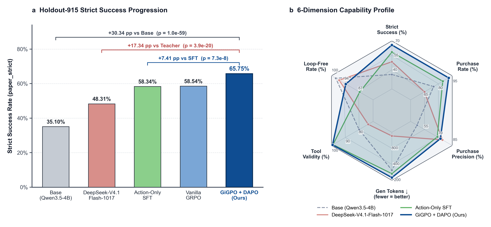
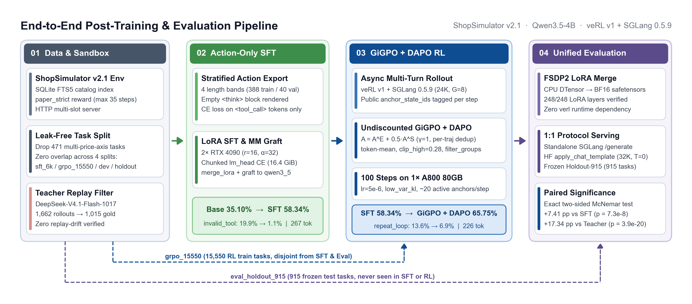

ShopMaster-4B 完整打通「防泄露数据划分 → Teacher 轨迹采集与回放过滤 → Action-Only SFT 蒸馏 → GiGPO + DAPO 强化学习 → 统一协议评测」五阶段链路，在完全冻结的 915 题留出集上，以约 1/6 的生成 Token 和约 70% 的交互步数，端到端反超 DeepSeek-V4.1-Flash-1017。

Qwen3.5-4B 经 Action-Only SFT 从基座的 35.10% 升至 58.34%；Vanilla GRPO 基本原地踏步，而 100 步 GiGPO + DAPO 将严格成功率推至 65.75%。
右图 b 的六维能力雷达说明了反超原因：DeepSeek-V4.1-Flash-1017 下单精准度最高，但在工具合规、购买率与生成开销上明显偏科；4B 模型在效果、稳定性与效率上形成最均衡包络，以约 70% 的交互步数和约 1/6 的生成 Token 拿到更高的端到端准确率。
| 模型 | 有效题 | 严格成功率 | 均分 | 购买率 | 下单精准度 | repeat_loop |
invalid_tool |
题均步数 | 题均 Token |
|---|---|---|---|---|---|---|---|---|---|
base-nothink (Qwen3.5-4B) |
906/915 | 35.10% (318) | 0.382 | 74.83% | 46.90% | 19 (2.1%) | 182 (19.9%) | 4.5 | 311 |
DeepSeek-V4.1-Flash-1017 |
915/915 | 48.31% (442) | 0.509 | 64.92% | 74.41% | 34 (3.7%) | 242 (26.4%) | 9.5 | 1,367 |
Action-Only SFT (ep2) |
905/915 | 58.34% (528) | 0.607 | 84.75% | 68.84% | 124 (13.6%) | 10 (1.1%) | 8.2 | 267 |
Vanilla GRPO (Step 100) |
907/915 | 58.54% (531) | 0.609 | 86.66% | 67.56% | 107 (11.7%) | 10 (1.1%) | 7.3 | 240 |
| GiGPO + DAPO (Step 100) | 911/915 | 65.75% (599) | 0.675 | 91.11% | 72.17% | 63 (6.9%) | 7 (0.8%) | 6.7 | 226 |
| 对比组 (A → B) | 配对数 n | 成功率变化 | ΔSucc | B 独赢 / A 独赢 | Exact McNemar p |
|---|---|---|---|---|---|
Base → Action-Only SFT | 898 | 35.19% → 58.35% | +23.16 pp | +248 / −40 | 8.13e-38 |
Action-Only SFT → Vanilla GRPO | 905 | 58.34% → 58.67% | +0.33 pp | +21 / −18 | 0.7493 |
| Action-Only SFT → GiGPO + DAPO | 904 | 58.30% → 65.71% | +7.41 pp | +111 / −44 | 7.28e-08 |
| Vanilla GRPO → GiGPO + DAPO | 906 | 58.50% → 65.67% | +7.17 pp | +103 / −38 | 4.10e-08 |
| DeepSeek-V4.1-Flash-1017 → GiGPO + DAPO | 911 | 48.41% → 65.75% | +17.34 pp | +232 / −74 | 3.89e-20 |
所有训练与评测围绕 ShopSimulator v2.1 的严格乘积奖励 r_strict = r_type · r_att · r_option · r_price 展开。点击下方四个阶段标签，快速查看每一步的关键设计。

grpo_15550 仅进入 RL、冻结测试集 eval_holdout_915 仅用于最终评测，四集合两两严格零交集。
审计原始任务池，静态剔除目标商品无法唯一核验价格的题目（开发集剔 26 题、留出集剔 44 题、RL 池剔 401 题），保证奖励信号无噪声。
划分出 eval_dev_474（474 题）、冻结 eval_holdout_915（915 题）、sft_6k（6,000 题）与 grpo_15550（15,550 题），强制校验 task_id 零重叠。
用 DeepSeek-V4.1-Flash-1017 采集 1,662 条轨迹，经环境逐轮重放核验，只保留买对且零状态偏差的 1,015 条成功轨迹（已打包内置进仓库）。
从 1,015 条成功轨迹按长度分 4 档抽样出 388 条训练 + 40 条验证，在保留复杂长轨迹的同时避免短样本主导梯度。
每轮 assistant 置空 <think>、仅对 <tool_call> 动作段计算交叉熵；配合按 token 预算组批与 512 行分块 lm_head，双卡 4090 仅用 16.4 GiB 显存。
训练基于纯文本骨干加速，结束后将合并后的 426 个文本张量写回 Qwen3.5-4B 原多模态分片并原样保留视觉塔，让 SGLang 以 qwen3_5 类型直接加载。
仅用环境公开 observation_state 哈希生成 anchor_state_id，跳过 Turn 0 首页并对单条轨迹内重复锚点去重，以 A = A^E + 0.5·A^S 给出无折扣步级反馈。
从 seq-mean-token-mean 改为 token-mean 消除短轨迹偏置，叠加 clip_ratio_high=0.28、动态 filter_groups 整组驱逐与 lr=5e-6，24K 上下文跑满 100 步。
全部算法代码保留在 ShopMaster-4B 仓库中，仅用 64 行补丁透传 anchor_state_ids 并通过装饰器按需注册 adv_estimator: gigpo，每步平均激活 20.0 个有效锚点。
用 merge_verl_lora.py 将训练端 DTensor LoRA 合并回 BF16 Safetensors（校验 248/248 层完整匹配），解除对 verl 训练环境的依赖。
独立 SGLang 原生 /generate 配合 HF apply_chat_template 与 qwen3_coder 解析器，逐题验证 prompt_tokens 与训练环严格一致，16GB 单卡即可跑通 32K。
所有 5 个模型均在完全冻结的 915 题留出集上按统一 paper_strict 口径成对统计，确证 GiGPO + DAPO 显著优于 SFT（p = 7.3e-8）与 Teacher（p = 3.9e-20）。
在 474 题开发集 eval_dev_474.jsonl 上（双卡 4090、64 并发、32K 上下文、T=0.0），我们围绕「训练监督方式」与「推理思考开关」做了系统控制变量实验。切换下方视图可查看主对照 7 组或全部 13 组逐轮演化。
| 模型 / 范式 | 训练监督 | 思考 | 严格成功率 (/474) | 正常结束率 | 终局转化 | 题均生成 Token | ≥16K 题数 | 474 题耗时 |
|---|---|---|---|---|---|---|---|---|
Base · 开思考 | 无微调 | 开 | 58.02% | 51.27% | 1,691 | 31 | 18.8 min | |
Base · 关思考 | 无微调 | 关 | 75.53% | 42.18% | 291 | 5 | 7.7 min | |
Thought-Action SFT · ep2 | 思考 + 动作 | 开 | 69.20% | 65.24% | 2,080 | 157 | 55.1 min | |
Thought-Action SFT · ep2 | 思考 + 动作 | 关 | 69.20% | 61.28% | 875 | 97 | 32.2 min | |
Action-Only SFT · ep2 | 仅工具动作 | 开 | 75.74% | 62.12% | 705 | 53 | 18.5 min | |
| Action-Only SFT · ep2（选定 RL 起点） | 仅工具动作 | 关 | 98.95% | 53.73% | 285 | 48 | 17.9 min | |
Two-Stage SFT · ep2 | 先动作后思考+动作 | 开 | 67.72% | 68.22% | 1,941 | 128 | 47.1 min |
| 策略与轮次 | ep1 成功率 | ep2 成功率 | ep3 成功率 | 峰值非法调用 | 峰值单轮截断 | 训练显存峰值 |
|---|---|---|---|---|---|---|
Thought-Action SFT · 开思考 |
36.08% | 45.15% | 46.62% | 74 题 | 42 题 | 17.25 GiB |
| Action-Only SFT · 关思考 | 45.15% | 53.16% | 51.05% | 2 题 | 0 题 | 16.36 GiB |
Two-Stage SFT · 开思考 |
36.50% | 46.20% | 47.47% | 87 题 | 42 题 | 17.25 GiB |
引入思考监督后，模型单题输出显著膨胀。在多轮长观察的购物交互里，冗长思维链会增加长度与上下文截断风险，同时干扰模型对当前页面状态的跟踪，导致中后段频频出现过时商品 ID、缺失页签点击等非法调用。这类模型走到结账页时选品更准，但大量题目提前中止，整体成功率反而更低。
同为关闭思考，Action-Only SFT 把正常完结率推到 98.95%，并明显提高了终局买对转化，效果优于先训思考再关闭思考的做法。高质量的「观察 → 动作」轨迹已经隐含教师的搜索、比价与选品决策，4B 模型无需冗长思维链即可内化这些偏好。把上下文空间留给环境观察后，剩余错误集中在终局选品与重复循环，适合交给后续 RL 优化。
对比 100 步 Vanilla GRPO 与 GiGPO + DAPO 的真实训练动力学，以及冻结 Holdout-915 上的四项分项奖励与交互行为统计。
基于 GiGPO + DAPO 100 步训练期 [GiGPO] 实时日志（每步 8 题 × 8 轨 = 64 条轨迹，ω = 0.50）与 3,000 个激活锚点的页面状态还原，拆解步级信用 A^S 的实际触发强度、落点页面及对应的 Holdout-915 奖励增量。
A^S，其余 77.8% 退回纯 A^EA^S、2/3 来自轨迹级 A^E（按全轨迹平均约 9.9%）paper_strict_score
0.609 → 0.675 +0.066
r_option（最大子项增量）
0.740 → 0.790 +0.050
token-mean、clip_high=0.28、动态整组过滤）联合启用，未单跑「去 GiGPO 仅留 DAPO」消融。上述 33.2% 锚点优势占比与 84.7% 商品页落点，从训练信号与 r_option 最大增幅两侧相互印证了步级信用的定向作用。
| Holdout-915 诊断模型 | 品类 r_type |
属性 r_att |
规格 r_option |
价格 r_price |
详情子页点击率 | 二次重搜率 | 均浏览商品数 |
|---|---|---|---|---|---|---|---|
base-nothink |
0.994 | 0.800 | 0.555 | 0.925 | 8.7% | 9.7% | 1.06 |
DeepSeek-V4.1-Flash-1017 |
0.997 | 0.916 | 0.836 | 0.966 | 63.3% | 45.5% | 1.69 |
Action-Only SFT (ep2) |
0.997 | 0.863 | 0.751 | 0.975 | 35.7% | 36.5% | 1.45 |
Vanilla GRPO (Step 100) |
0.994 | 0.852 | 0.740 | 0.969 | 17.5% | 35.2% | 1.41 |
| GiGPO + DAPO (Step 100) | 0.995 | 0.871 | 0.790 | 0.959 | 3.9% | 24.4% | 1.45 |
各模型的品类匹配 r_type 均接近满分，真正拉开差距的是规格匹配 r_option。仅靠轨迹级稀疏终局奖励（终局发放四项乘积连续分 r_strict ∈ [0, 1]、无过程奖励）时，Vanilla GRPO 把得分均摊到整条轨迹，只推高了下单率，精准度反而下滑。引入基于公开页面状态的步级锚点 GiGPO 与 DAPO 更新后，同商品页上的对错规格立刻获得清晰对比反馈，死循环减半且购买率、精准度与 r_option 同步提升。
教师模型在超六成题目中会点进详情子页核对，SFT 也继承了一半这一习惯；进入 RL 后详情子页点击率骤降至 3.9%，二次重搜明显减少，而货比三家广度保持不变。这一行为没有任何规则限制，由奖励驱动自然形成：减少冗余跳转后，模型以更短步数和更少 Token 打出了更高的 r_att 与 r_option。
走到结账环节时，DeepSeek-V4.1-Flash-1017 的选品精度依然最高。系统提示与每轮观察 JSON 已明确给出当前页的 actions 列表与 search_available 约束，但 Zero-shot 下它仍频繁在子页未返回时误操作，导致四分之一以上题目直接判零。4B 模型借 SFT 压低非法调用、借 GiGPO + DAPO 稳定收尾，依靠更高的全链路完成度实现端到端反超。
以下 3 道题目全部直接抽自冻结留出集 eval_holdout_915.jsonl 的真实 rollout 日志，点击切换案例，直观对比 DeepSeek-V4.1-Flash-1017、Action-Only SFT、Vanilla GRPO 与 GiGPO + DAPO 的逐轮操作差异。
涵盖双环境搭建、FTS5 索引构建、Action-Only SFT 训练、24K GiGPO + DAPO 强化学习与 Holdout-915 统一评测的全部可执行命令与参数。
均已合并为完整 BF16 权重（含 generation_config.json），可直接用 SGLang / vLLM / Transformers 加载推理，无需重新训练。
仓库直接内置 1,015 条回放 0 误差教师成功轨迹（零 API 成本即可开跑 SFT），以及 64 行轻量 veRL v1 GiGPO 与同步重采补丁。
paper_strict 口径token-mean 聚合、高上界裁剪与动态组过滤
多轮购物轨迹长达 16K–32K Token，而 Qwen3.5-4B 的词表高达 248,320。如果不做针对性的显存与系统优化，哪怕只开 LoRA 也会在 24GB 甚至 48GB 显卡上直接 OOM。下面整理了我们在 SFT、RL、框架适配与评测四个环节落地的核心工程手段。
lora.merge + free_cache_engine 让 SGLang 休眠时从 17.9 GiB 彻底让卡给 FSDP2。save_lora_only 相比 8.8 GB 全量压缩 22×，100 步留满 20 个断点仅占 7.8 GB。/generate + Radix 缓存跑满 915 题。
Qwen3.5-4B 的隐藏维度只有 H = 2,560，词表却高达 V = 248,320。最后一层 lm_head 会把每个 token 的向量宽度一下子放大 97 倍（转成 FP32 算交叉熵就是 194 倍）。Gradient Checkpointing 只能释放前面 32 层 Transformer 的中间激活，管不到最后一层吐出的巨型词表张量——这正是长上下文训练最容易爆显存的根源。
O(L · V)model(input_ids, labels=...)，把整条 [L, 2560] 一次性乘上输出头，前向先产生一份 BF16 logits：L × 248,320 × 2B（16K 即 7.58 GiB，24K 即 11.37 GiB）。F.cross_entropy 将其转为 FP32：L × 248,320 × 4B（16K 15.16 GiB，24K 22.73 GiB）。d_logits 以及 softmax / log-sum-exp 中间缓存，正反向瞬时峰值达 2–3× FP32（16K 30.3–45.5 GiB，24K 45.5–68.2 GiB），24G/48G 卡直接 OOM。O(L · H + C · V)hidden_states 换掉整张 logits：显存里只常驻输出头之前的 h（L × 2,560 × 2B，16K 仅 80 MiB，24K 仅 120 MiB）以及逐 token 标量结果 loss / log_probs（16K 仅 64 KiB）。C = 512 行切片送进 lm_head，同一时刻最多只有 1 块 [512, 248320] FP32 logits（485 MiB / 0.47 GiB），算完立刻释放；反向时再逐块重算 1 次线性投影并把梯度累加回 d_hidden（A800 RL 走 Triton 核则在片上 SRAM 做 online softmax，连单片都不必完整写回显存 HBM）。labels = -100），进 lm_head 前直接剔除这些行，分块循环次数减少 5–10 倍，抵消重算耗时。hidden_states（BF16）
80 MiB
h + 单片 FP32）
0.55 GiB (565 MiB)
两个阶段都避免了整张 [L, 248320] 词表矩阵落地显存，但落地入口不同——SFT 在训练脚本里手工实现前置过滤与分块，RL 通过 veRL 的 use_fused_kernels 接管模型前向与反向。
gathered_ce()
src/shop_rl/train/sft.py
lm_head：前向不调 model(labels=...)，只调文本骨干 inner(...) 取 last_hidden_state（[B, T, 2560]）。-100 再切片：用 sel = tgt != -100 抽出有效 assistant 行（砍掉 80%–90% 观察位），每 512 行包一层 checkpoint(ce_rows, use_reentrant=False)，前向算完立刻丢弃该块 logits，反向逐块重算。def ce_rows(h_rows, w_head, y_rows): logits = (h_rows @ w_head.t()).float() # 仅 [512, 248320] = 485 MiB return F.cross_entropy(logits, y_rows, reduction="none") # 1) 只跑文本骨干拿隐藏态，不生成全序列 logits h = inner(input_ids=ids, attention_mask=att).last_hidden_state # 2) 进 lm_head 前先滤掉占比 80%+ 的 -100 观察位 sel = labels[:, 1:] != -100 hs, ys = h[:, :-1][sel], labels[:, 1:][sel] # 3) 每 512 行分块 + checkpoint 重算，算完即释放 ces = [ckpt(ce_rows, hs[s:s+512], w_head, ys[s:s+512], use_reentrant=False) for s in range(0, hs.shape[0], 512)]
old_log_prob、ref_log_prob 与 update_actor，且 A800 动态打包单批高达 49,152–65,536 token，不融合会瞬间爆出上百 GiB。triton）：走 veRL 的 Triton 融合核 LinearCrossEntropy，在片上 SRAM 对 token 与词表联合分块做 online softmax，完全不将 [T, 248320] 写回显存 HBM。torch）：退回纯 PyTorch 的 FusedLinearForPPOFunction，正反向均按 chunk_size=512 循环分块，只保存 hidden_states 供反向重算。（注：RL 核对打包序列全量分块后，再于 PPO loss 用 response_mask 掩码。）# configs/rl/gigpo_a800_80g.yaml (A800 正式 24K 配置) actor_rollout_ref: model: use_fused_kernels: true # 接管 Qwen3_5 前向，直接输出 [T] 标量 fused_kernel_options: impl_backend: triton # A800 走 Triton SRAM 融合；4090 改 torch 512 分块 actor: use_dynamic_bsz: true ppo_max_token_len_per_gpu: 49152 # 靠融合核撑起 48K 动态打包不 OOM
-100 + 512 行重算交叉熵多轮购物轨迹中系统提示与环境观察占 80%–90% 且不参与监督。sft.py 的 gathered_ce() 在进 lm_head 前先过滤掉所有 labels == -100 位置，再按 512 行切片用 torch.utils.checkpoint(..., use_reentrant=False) 逐块算 FP32 CE，彻底消除整张词表峰值。
训练经 AutoModelForCausalLM 只加载 4.21B 文本骨干，跳过 0.33B 视觉塔省下约 0.7 GiB；8 层全注意力显式走 PyTorch SDPA 避免 O(L²) 矩阵物化，24 层 Gated DeltaNet 启用 flash-linear-attention Triton 内核；仅对 248 个语言线性层挂 LoRA，两卡直接轻量 all_reduce 梯度，省去 DDP bucket 开销。
取代固定 batch_size=1 的低效做法：样本按长度排序加随机微抖动后贪心装入 token_budget = 14,336 的微批再打乱批序。短轨迹自动多条同批，双卡有效 batch 提到均值 8.6 条，吞吐达 1,850–2,050 tok/s/卡，三轮 SFT 不到 40 分钟即完成。
graft.py）纯文本训练产出为 qwen3_5_text，而 SGLang 仅注册了多模态类型 qwen3_5。graft.py 按去前缀后缀唯一匹配把合并后的 426 个文本张量写回原始多模态分片并原样保留视觉塔，不重训即可直接用 SGLang 高速服务。
开启 lora.merge: true 与 free_cache_engine: true，让 SGLang 在 sleep() 时把权重与 KV Cache 一并释放（2×4090 实测从 ~17.9 GiB 跌至 ~1.3–1.5 GiB）；FSDP2 开启 use_fused_kernels: true（A800 走 Triton、4090 走 PyTorch 512 分块），把 24K 上下文词表计算稳压在线性显存内。
A800 调优实测：关闭 grad_ckpt 时 16K 轨迹在 update_actor 会触顶 81.1 GiB OOM；开启后反手将 ppo_max_token_len_per_gpu 放宽到 49,152、log_prob 提到 65,536，叠加 flash_attention_2 + use_remove_padding + use_dynamic_bsz 动态去填充打包，推理侧启用 flashinfer + CUDA Graph + 32 环境并发槽，单卡高吞吐稳跑 24K 100 步。
单卡 A800 关掉 CPU Offload 并保留 model_dtype: fp32（前反向仍走 BF16 Tensor Core），避免低学习率 5e-6 下 BF16 LoRA 更新下溢；LoRA 模式下 verl 自动走 ref_in_actor 复用单份冻结基座算参考概率，省掉约 8.8 GiB 独立 Ref 模型。
save_lora_only）面对云主机有限的数据盘空间，开启 save_lora_only: true，每步只落盘 496 个 LoRA 张量（123.8 MiB）与 Adam 状态（249 MiB），完整可续训断点仅 392 MiB，每 5 步存盘、100 步保留全部 20 个断点仅占 7.8 GB。
verl v1 补丁全部 GiGPO 算法与 ShoppingAgentLoop 留在 ShopMaster-4B 仓内，仅以 64 行补丁完成三件事：透传 anchor_state_ids、按需导入注册 gigpo，以及修复 sync_refill_failed_groups 在同组存在残留键时漏补失败组的边界缺陷。
ShopSimulator 依赖旧版 spacy / numpy 1.26，与 RL 栈 torch + numpy 2.x 二进制冲突。将环境拆为独立 HTTP 服务运行在隔离虚拟环境内；ShoppingAgentLoop 用 asyncio.Semaphore 限流并以 try...finally 强制释放租约，压测与异常中断后核验 Reset == Release 零泄漏。
多模态 Qwen3.5-4B 顶层 config.json 中 eos_token_id=null，会导致 SGLang 解析出空停止符集合，模型在首轮输出完工具调用后不停机、一路幻觉撞满 512 token 截断。在训练采样环与评测器中显式注入 [248044, 248046]（<|endoftext|> 与 <|im_end|>）彻底解决。
shop_rl rl monitor）后台增量扫描 rollouts-*.jsonl（容忍末尾半行），实时聚合组内方差占比、四项子分、8 类终止原因与步数分布写入 TensorBoard，及时捕获 Vanilla GRPO 后期奖励停滞与 GiGPO + DAPO 步数收敛。
merge_verl_lora.py 在纯 CPU 上将训练端导出的 DTensor LoRA 以 FP32 精度合并回 BF16 Safetensors，校验所有 248 层完整匹配且零依赖 verl，训练完立刻释放 A800，把评测迁回低成本消费级显卡。
/generate 1:1 对齐 + 16GB 单卡 32Kserve_eval.py 直接向 SGLang 原生 /generate 发送本地 apply_chat_template 生成的精确 input_ids，避开 OpenAI /v1/chat/completions 额外注入 "strict": false 引发的模板偏移，同时保留 Radix 前缀缓存，16GB RTX 4080 SUPER 单卡仅用约 5 GPU·h 即跑完 4 个 4B 模型的 915 题 32K 评测。
教师轨迹采集与 Zero-shot 对照共消耗 153.6M Token。多轮购物共享固定系统提示、工具定义与历史前缀，实测约 86.4% 输入命中 DeepSeek 自动前缀缓存，叠加消费级显卡 SFT/评测与按小时租用单卡 A800，把全流程成本压进约 300 元。
仓库直接打包了全部 1,015 条经环境逐轮回放 0 误差核验的教师轨迹（data/sft/teacher_success_1015.tar.gz），社区复现时无需重花 API 费用，一行解压即可从 SFT 或 RL 阶段直接起步。
| 阶段与瓶颈 | 核心根因 | 落地工程解法 | 实测收益 |
|---|---|---|---|
| SFT 显存爆仓（24GB 4090） | 248,320 超大词表在 16K 下生成数十 GiB FP32 logits 与 d_logits |
前置滤 labels != -100 + 512 行 ckpt 分块 CE + 纯文本骨干 + SDPA |
4B 峰值压至 16.36 GiB（单片 485 MiB） |
| SFT 吞吐偏低（长短轨迹混杂） | 固定 batch=1 时大量短轨迹 GPU 利用率极低 |
按 token_budget=14,336 排序贪心装批 + 轻量 LoRA all_reduce |
有效 batch 升至 8.6，3 epoch 仅 36.5 min |
| RL 同卡显存争抢（SGLang vs FSDP2） | 推理权重/KV 与 FSDP2 训练激活叠加触顶 OOM | lora.merge + free_cache_engine 休眠释显存 + use_fused_kernels 分块 |
休眠降至 ~1.4 GiB，单卡 A800 稳跑 24K |
| RL 长序列吞吐与 OOM 权衡（A800 80G） | 关闭 grad_ckpt 时 16K 更新步于 81.1 GiB OOM |
开 grad_ckpt + flash_attn_2 + remove_padding + 动态批 49,152 + flashinfer |
峰值稳控 68.7 GiB (83.9%)，64 并发高速采样 |
| 云盘空间受限（50G 数据盘） | 全量 BF16 断点单步约 8.8 GB，几步即写满 |
save_lora_only: true + ref_in_actor 复用基座 |
单步仅 392 MiB（压缩 22×），20 断点仅 7.8 GB |
| 评测算力与 Prompt 漂移 | 绑定 A800 评测太贵；OpenAI 接口注入 strict:false 偏移模板 |
纯 CPU 合并 LoRA + 独立 SGLang 原生 /generate + 显式 EOS 注入 |
16GB 4080 SUPER 跑通 32K 915 题，1:1 零偏移 |